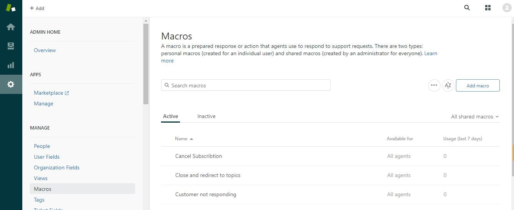
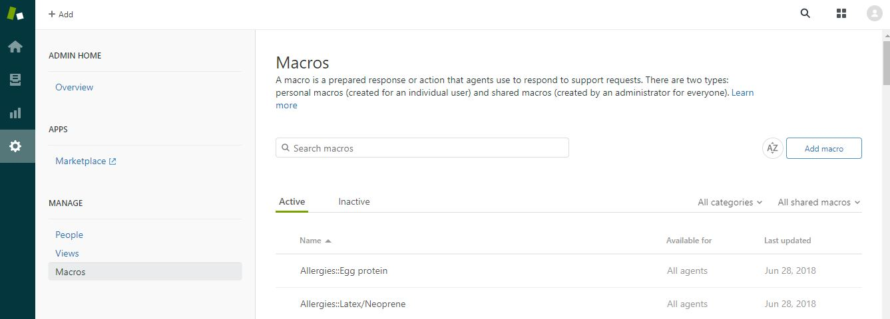
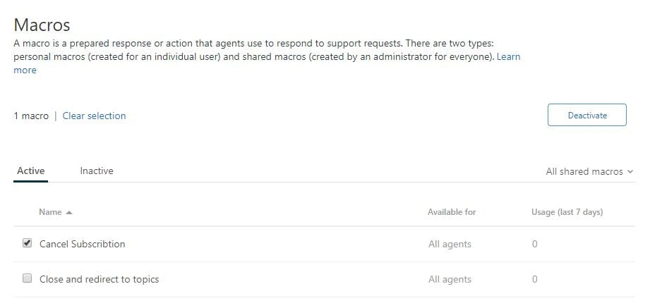
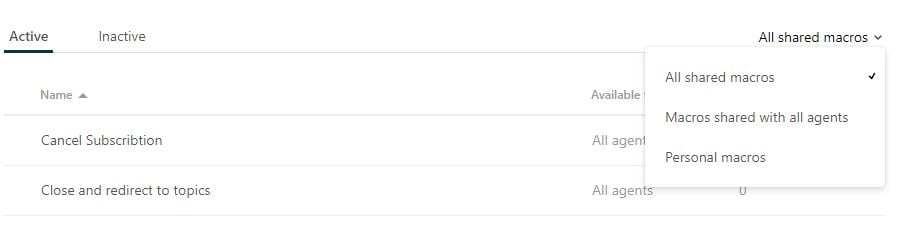
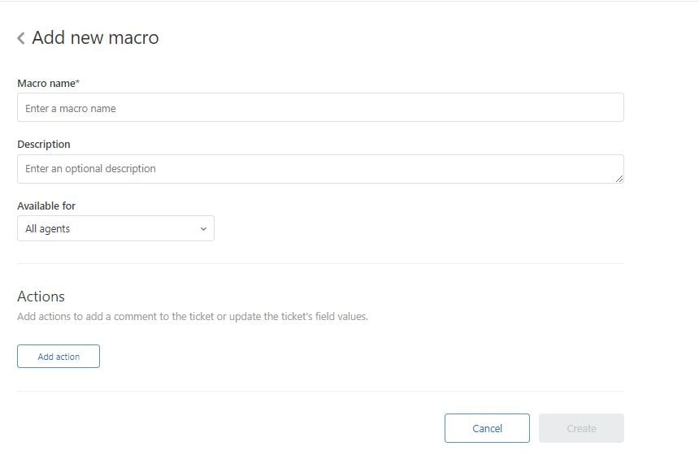
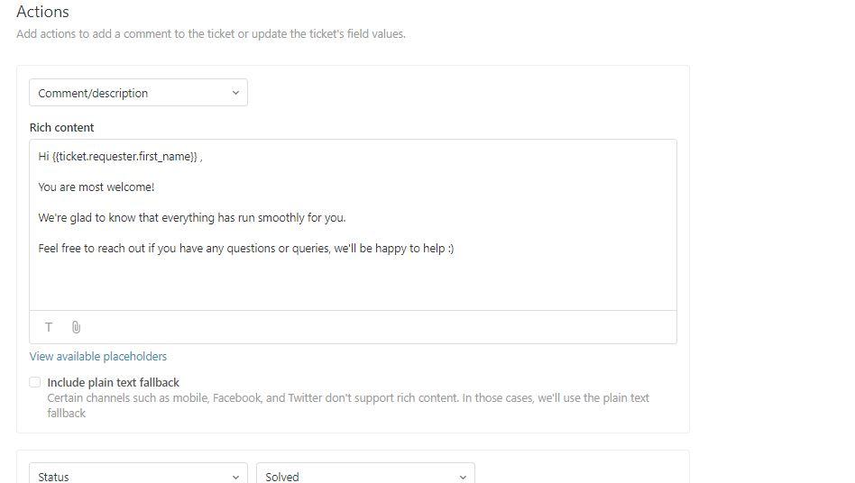
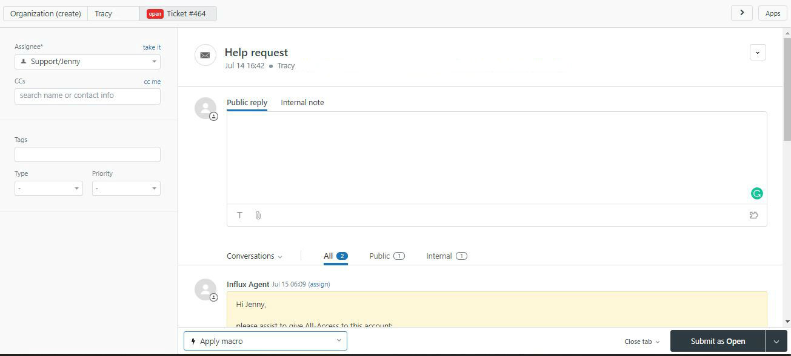
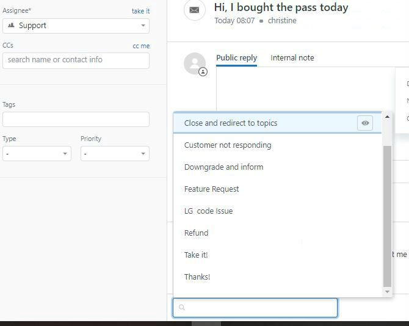

Macros are a Zendesk term for ‘saved replies.’ Using macros, you can respond to customers faster while reducing the chance of making a mistake.
Looking for examples of macros in Zendesk? Scroll down to the bottom of this post.
Setting up macros is the natural first step once you create a Zendesk instance. If you’re building an outsourcing function, setting up Macros is a natural way to onboard new hires and ensure consistently high quality responses.
In this tutorial, we walk through the following
- Turn on macros as an admin
- Create your first macro (congrats!)
- Add a macro to your first ticket (congrats again!)
- How to use macros efficiently
- Macro examples
For more tutorials on using Zendesk, check out our tips on setting up views, tags, CSAT and markdown.
Enable macros in your Zendesk account
To access all your Macros, you’ll need to click the Admin (Wheel) button >> Manage >> Macros, and depending on whether you’re an admin/regular user, this is what you’ll see:

Admin view

Agent view
You can search for a specific macro using the search function, and deactivate an Active Macro by clicking on the square beside their name and marking them with a checklist.
See:

You can also sort through the Macros to only view Shared ones (everyone can view) or Personal (only you can view)

Now, to create a new macro - simply click on “Add Macro” or click on the existing ones to edit them.
Create your first macro in Zendesk
Here’s what you’ll see when you opened up a Brand new Macro.

Components:
- Name
- Description: what it contains and for what case, ie: the title is “Feature request” and the description is “for customer feedback”. Note that this is optional
- Available for: All Agents, Agents in Group (ie: We have a group for Sales and the macro only applies to their workload) or Personal Only
- Actions: The most important part! In here, we can add our text and some automation related to the query. For example:
We want to create a Macro for “Thank you” replies; the one we send after a customer thanks us for assisting them/resolving their issue.
The Macro should contain:
- Comment/Description: the support text
- Automation to set the status to “Solved” to fully close the ticket.
It’ll look something like this:

Ticket requester first name is a Zendesk code that automatically adds a customer name based on the contact Info on their email address. It’s important to double check to make sure that we got the customer’s name right!
If you don’t know the name, using a simple “Hi there” can also be an option.
Other Action functions: Set Priority (Urgent or Low for example) Assignee, Add or remove tags automatically, add a CC.
Add a macro to your first ticket in Zendesk
To add a macro into a ticket, simply open the ticket you’ll be working on and navigate to the bottom left, opposite side to Close tab and “Submit as:” button. It’s a dropdown called “Apply macro”


All the saved macros will be ready for your choosing, and you can also search for a specific one in the search bar
Once you clicked it, the macro will be applied instantly and you can edit the text to match the customer’s needs.
How to use macros efficiently, with examples
Macros should be used to present a piece of information. They shouldn't be used as the entire response. As such, when you’re writing a response, you should present pieces of information using a macro, but you should still tailor each response for every customer.
So, when using a macro, make sure that you:
- Use a personalized lead in
Macro: ‘ Hi Andy, thanks for taking the time to get in touch. We are often contacted by customers wanting to showcase our products on their sites. Please send me a link to your blog or website so that I can gauge whether it’s suitable …’
Personalised: ‘Hi Andy, great to hear from you! I’m really happy that you’re interested in promoting our products on your blog. So that we can better understand your audience, could you please [insert macro]’
- Read through the macro carefully and remove any redundant or unnecessary information.
- Are certain that the information is relevant, current, and easy to understand as possible.
- Before using a macro, segue into it by adding context for the customer. For example, say, ‘here’s some details on how to troubleshoot connectivity,’ rather than dumping the troubleshooting instructions into a response.
- Use a personalized ending
Macro: ‘We hope this has has solved your troubleshooting problem and thanks again for getting in touch with the team”
Personalised: ‘I understand how difficult troubleshooting can be, if the above steps aren’t clear, please get back in touch with me and I’ll provide you with additional information and support.’
Macro examples: What macros should I start with?
There are no set rules on what Macros is strictly necessary and not, as it all comes down to what kind of business you have and the type of queries that comes in. However, in our years of doing customer support, here are some of the general topics that we would typically document, and some extra e-commerce and SaaS specific ones as well.
- Acknowledging the query / Escalating It can be something like this:
Hi there, I’m sorry you’re having this trouble.
Let me send this through to my manager and she will get back to you during Australian Business Hours. If you have other questions in the meantime please let me know and I’ll be happy to help as much as possible.
OR
I’m sorry I haven’t been able to solve this immediately, but I wanted to let you know I haven’t forgotten about you!
In order to ensure a satisfactory resolution, I’ve gone ahead and escalated your ticket to our Support Captain who will be able to assist you.
Again, we appreciate your patience with this issue - do not hesitate to reply to this email if you have any further questions or concerns.
- Support delays due to incomplete team/volume hike/holidays
There’s been a public holiday in Australia at the moment so the team will be unavailable. As they deal with all refunds and account related queries, it may take them an extra day to get back to you. I apologise for any inconvenience this causes.
OR
Hi there!
We’re experiencing a high volume of tickets this week, and as a result, our reply time is a little slower than we’d like. Just to let you know that we have received your request and we will have an answer for you in the next 24 hours. If you have any additional information you’d like to add, you can reply to us here, rather than opening a new support ticket.
Thanks so much for your patience. We look forward to helping you shortly!
- Feedback or feature/product request:
Thank you for your suggestion! we’ve sent that on to the team for consideration.
- Website is down/known bug:
Sorry! We are having a technical issue right now. We’re working on fixing it and will let you know when it’s sorted out.
- Customer not responding:
Hi there, Our agent Mikey has tried to contact you about this request but we haven’t heard back from you yet. Please let us know if we can be of further assistance. Thank you!
Other useful general topics:
- Unsubscribe from newsletter (how to)
- Login error/password reset
- Redirect to public FAQ
- Marketing/Press/Charity inquiries
- Interface questions (ie: how to navigate the website, like how to log out, where to put customer details, etc)
- Looking for Discount / current promotions
Errors / Tech macros:
- How to solve common bugs
- How customer can help our team diagnose (ie, questions about the browser they are using, or how they can get to Chrome error console for example)
Product/Service specific:
- Do you have a monthly/yearly subscription plan?
- Benefits of upgrading?
- Where is my order?
- Return processes
- Item out of stock
- Sizing/ Material Allergen if the product is food or cosmetics
- Shipping estimates
- Tracking number error
- Do you ship to x country?
- Warranty claim / Faulty product
- Cancel my order please
Payment/Refund related:
- Card/Payment declined
- What payment methods are available
- Refund: first instructions
- Refund: confirm processed
Other than the first five, one of the sure-fire ways to determine what other macros you need is to look at your support trends and see what’s the 10 most common topics are :)
Once you know this, the process of building your macros will be so much simpler and easier! Also remember that you can take it one step at a time, as you can always add or edit later.
More Zendesk Tutorials
Find this tutorial helpful? We’ve published a few more:
If you would like to find out more about how Support as a Service **can help you with your support experience - get in touch!
For more details on setting up a support function, check out more of our research and interviews.